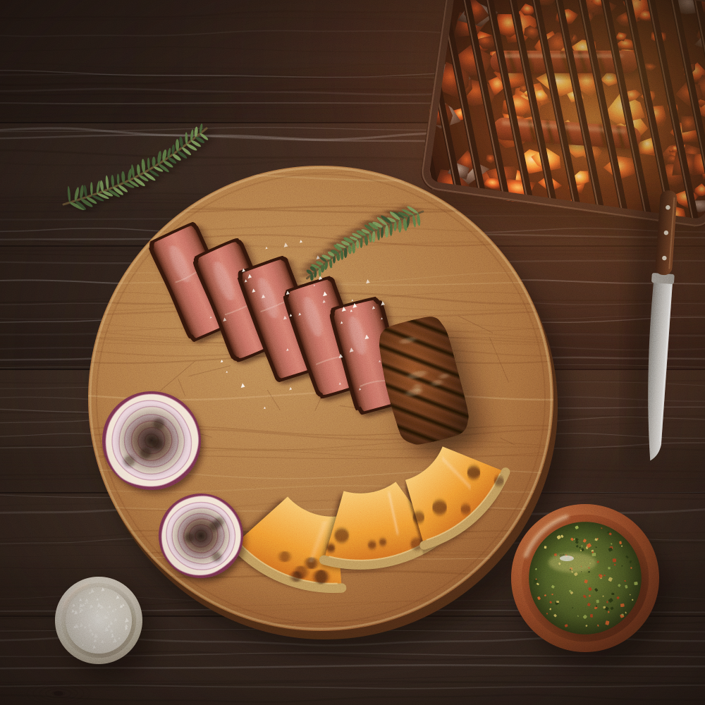
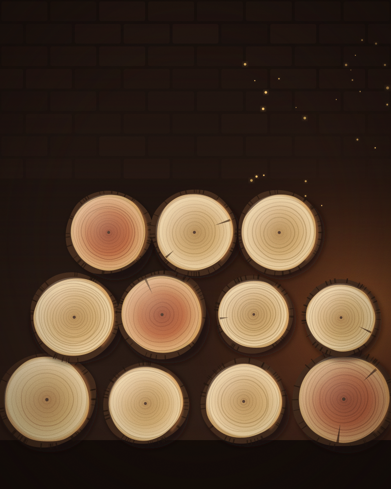

Cocina a las brasas · Barrio Italia, Providencia
Fuego lento, leña del sur.
Asamos carnes de campo, pescados de la costa de Los Ríos y verduras de huerta sobre brasas de luma y ulmo. Una casa antigua, una cocina abierta y un fogón que se prende a las once de la mañana.
- Hoy
- Martes a sábado 13:00–16:00 y 19:30–23:30
- Dónde
- Calle Los Leñadores 1186, Providencia

01 La cocina
Una cocina que se mide en brasas, no en llamas.
La llama es para prender; lo que cocina es la brasa. Por eso el fogón de Brasa Sur arde toda la mañana antes del primer servicio, y cada plato tiene su zona: brasa viva para sellar, rescoldo para las papas y la betarraga, calor de costado para el cordero que pasa seis horas en la parrilla.
-
Leña
Luma para un calor parejo y largo, ulmo para el aroma. Leña seca de pequeños leñeros de Los Ríos; nada de gas ni carbón de bolsa.
-
Campo
Vacuno y cordero criados a pasto en el sur. Compramos cortes enteros, los maduramos y los despostamos en casa.
-
Costa
Reineta, congrio y choritos de la costa valdiviana, según lo que salga esa semana. Si el mar no da, el plato no está.
-
Huerta
Zapallo, puerros, betarragas y papas nativas que van directo al rescoldo. Casi la mitad de la carta funciona sin carne.
02 La carta
Carta de primavera
Precios de ejemplo en pesos chilenos (CLP). Brasa Sur es un negocio ficticio: esta carta es una muestra de diseño.
- Vegetariano
- Sin gluten en su receta (cocina compartida)
Para compartir
Para abrir la mesa mientras el fogón trabaja.
-
Pan amasado y pebre
$4.900Pan de horno de barro, pebre cuchareado de tomate, cebolla y cilantro, y mantequilla con merkén.
Vegetariano
-
Queso de campo a la brasa
$8.900Queso de vaca de la zona de Paillaco, dorado en sartén de fierro, con miel de ulmo y nueces tostadas.
VegetarianoSin gluten
-
Empanadas de cordero
$7.900Dos empanadas de horno con pino de cordero picado a cuchillo, cebolla dulce y ají cacho de cabra.
-
Longaniza y tortilla de rescoldo
$7.500Longaniza artesanal de cerdo asada lento, tortilla cocida en la ceniza y chimichurri de cilantro.
Del fuego
Carnes de campo sobre brasa de luma. Se sirven con una guarnición de la huerta.
-
Lomo vetado madurado
$21.900350 g de vacuno de pastoreo madurado 21 días, sal de mar de Cáhuil y chimichurri de la casa.
Sin gluten
-
Tira de asado de seis horas
$18.500Asado de tira de vacuno del sur, cocido de costado al calor del ulmo hasta que se separa del hueso.
Sin gluten
-
Costillar ahumado con luma
$16.900Costillar de cerdo glaseado con miel de ulmo y mostaza antigua, terminado sobre brasa viva.
Sin gluten
-
Pierna de cordero al palo
$19.900Cordero de crianza a pasto, puré de habas con menta y jugo de su cocción con romero.
Sin gluten
-
Pollo de campo a la plancha de fierro
$13.900Pollo deshuesado con piel crocante, limón asado y papas chilotas al rescoldo.
Sin gluten
Del mar
Pescados y mariscos de la costa de Los Ríos. La pesca del día cambia según lo que llegue.
-
Reineta a la brasa
$15.900Filete con piel en parrilla fina, papas chilotas moradas y amarillas, limón asado y salsa verde.
Sin gluten
-
Choritos en paila de greda
$11.900Choritos al vapor de chicha de manzana, cebolla morada y cilantro. Se sirven con pan amasado para el caldo.
-
Congrio colorado y cochayuyo
$17.500Trozo de congrio asado sobre hoja de repollo, caldo de su cabeza y cochayuyo salteado con ajo.
Sin gluten
-
Merluza austral con mantequilla de algas
$16.500Envuelta en hoja y cocida al rescoldo, con mantequilla de luche y puerros carbonizados.
Sin gluten
Huerta
Verduras de temporada al rescoldo y a la brasa. Funcionan como plato o como acompañamiento.
-
Zapallo camote asado
$8.900Gajos asados en sartén de fierro, yogur de oveja, pepitas tostadas, merkén y un hilo de miel de ulmo.
VegetarianoSin gluten
-
Betarragas al rescoldo
$8.500Cocidas enteras en la ceniza, con queso de cabra fresco, avellanas chilenas tostadas y hojas de la huerta.
VegetarianoSin gluten
-
Puerros carbonizados
$7.900Puerros enteros quemados por fuera y tiernos por dentro, vinagreta de mostaza y huevo de campo rallado.
VegetarianoSin gluten
-
Papas nativas y chancho en piedra
$6.900Papas chilotas de distintas variedades, asadas con su piel, y salsa de tomate y ají machacada en piedra.
VegetarianoSin gluten
-
Hojas de la huerta
$6.500Lechugas, rabanitos y brotes de la semana con aliño de miel de ulmo y semillas de zapallo.
VegetarianoSin gluten
Postres
Fruta del sur y la última brasa de la noche.
-
Leche asada con murtas
$5.900Leche asada de horno con manchas de caramelo y murtas del sur en almíbar suave.
VegetarianoSin gluten
-
Kuchen de murta
$5.500Masa de mantequilla, murtas y crumble de avena, con crema de campo batida a mano.
Vegetariano
-
Manzana asada en la brasa
$5.900Manzana del sur asada entera, crema de avellana chilena y helado de leche de la casa.
VegetarianoSin gluten
-
Queso de campo y membrillo
$4.900Queso mantecoso madurado con dulce de membrillo hecho en casa y nueces.
VegetarianoSin gluten
Bebidas y vinos
Jugos y aguas de hierbas hechos en casa, y una carta corta de vinos de valles del sur. Bebe con moderación.
Sin alcohol
-
Jugo de maqui y manzana
$3.900Prensado en la mañana, sin azúcar agregada.
-
Limonada de menta y jengibre
$3.500Con menta de la huerta y un toque de miel de ulmo.
-
Agua de cedrón y canela
$2.500Infusión fría o caliente, según el día.
-
Agua mineral
$2.900Con o sin gas, botella de 500 ml.
Vinos
-
Pinot noir, valle de Osorno · copa
$6.900Fresco y ligero, para la reineta y el cordero.
-
Chardonnay, valle de Malleco · copa
$6.500De clima frío, buena acidez para los choritos.
-
País de secano, valle del Itata · botella
$24.000Tinto liviano de viñas viejas, ideal con la tira de asado.
-
Carménère del Maule · botella
$26.000Especiado y redondo, para el lomo vetado.

03 Historia
Empezó en un patio, con un saco de leña.
Antes de ser restaurante, Brasa Sur fue un patio en Ñuñoa: una parrilla hecha con un tambor partido y un saco de leña que llegaba cada mes desde Panguipulli. Ahí Antonia Huenchumil, que aprendió a cocinar mirando el fogón de su abuela a orillas del lago, preparaba almuerzos de domingo para amigos que traían el vino y se quedaban hasta que se apagaba la última brasa.
En 2021 Antonia y Matías Ortúzar, carnicero de oficio, arrendaron una casa de fachada continua en Barrio Italia. Botaron un muro, levantaron un fogón de ladrillo a la vista y pusieron la cocina en el centro del salón, para que el fuego se vea desde todas las mesas.
Siguen comprando como en ese patio: leña seca a pequeños leñeros de Los Ríos, carne a crianceros del sur, pescado de las caletas de la costa valdiviana y verduras de una huerta que cada lunes avisa qué viene para la semana.
«La luma da un calor parejo y largo; el ulmo, un aroma dulce. Con las dos se cocina sin apuro.»
- 2018 Primeros almuerzos de domingo en el patio de Ñuñoa.
- 2021 Abre la casa de Barrio Italia, con 38 puestos alrededor del fogón.
- 2026 Carta de primavera: más huerta y más costa.
Historia, personas y lugares de este relato son ficticios, creados para esta demostración.
04 Galería
Vista desde arriba
Láminas ilustradas de la cocina. Ábrelas en grande y recórrelas con las flechas del teclado.
05 Reservas
Solicita tu mesa
Elige día, turno y cuántos vienen. Recibimos solicitudes con hasta 60 días de anticipación.
Formulario de demostración. Lo que ingreses se guarda solo en este navegador y no se envía a ningún restaurante ni a ninguna persona.
Horario
| Martes a sábado | 13:00–16:00 19:30–23:30 |
|---|---|
| Domingo | 13:00–17:00 |
| Lunes | Cerrado |
Bueno saber
- Guardamos la mesa 15 minutos después de la hora elegida.
- Si tienes alergias, cuéntanos en los comentarios: la cocina comparte superficies con gluten y frutos secos.
- Para más de 10 personas armamos un menú de fuego compartido.
Solicitud guardada en este navegador
Código de solicitud —
Esto es una demostración. La solicitud no se envió a Brasa Sur ni a nadie: Brasa Sur es un restaurante ficticio y esta información quedó guardada solo en este navegador.
Tu navegador no permite guardar datos locales, así que esta solicitud desaparecerá al recargar la página.
Tus solicitudes en este navegador
Este navegador bloquea el almacenamiento local: las solicitudes se verán mientras no recargues la página.
Aún no hay solicitudes guardadas aquí.
Cuando completes el formulario, tu solicitud aparecerá en esta lista. Puedes anularla cuando quieras.